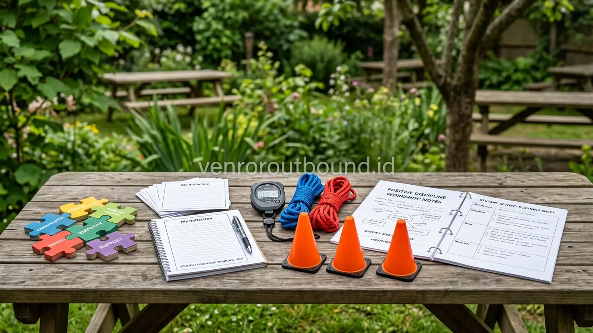

Bagi para Wakil Kepala Sekolah Bidang Kesiswaan serta Guru Pembina OSIS, merancang agenda Latihan Dasar Kepemimpinan Siswa (LDKS) kerap menimbulkan dilema tersendiri. Di satu sisi, pihak sekolah menghendaki agar calon pengurus memiliki kedisiplinan yang tinggi, daya tahan mental terhadap tekanan, serta rasa hormat terhadap organisasi. Di sisi lain, kekhawatiran terhadap tradisi perpeloncoan lama—seperti bentakan senior, penugasan yang tidak masuk akal, atau hukuman fisik yang berisiko—menjadi perhatian serius pihak sekolah dan orang tua murid.
Disiplin yang sejati dan ketangguhan karakter sesungguhnya tidak pernah lahir dari rasa takut atau intimidasi. Sebaliknya, kepemimpinan yang matang tumbuh dari rasa tanggung jawab, empati antarsesama, pemahaman konsekuensi tindakan, serta pengalaman menyelesaikan tantangan nyata bersama kelompok. Oleh karena itu, penyusunan modul LDKS sekolah yang terstruktur dan humanis menjadi kunci utama keberhasilan pembinaan kesiswaan.
1. Mengapa Model LDKS Konvensional Perlu Direvitalisasi?
Menyusun modul LDKS tanpa perpeloncoan dilakukan dengan menerapkan pendekatan edukasi outdoor yang empatik dan terukur. Fokus kegiatan diarahkan pada tantangan pemecahan masalah kelompok, komunikasi efektif, kepemimpinan, disiplin positif, serta kepedulian antarsiswa, bukan hukuman fisik atau intimidasi verbal.
Metode pembinaan lama yang mengedepankan tekanan psikologis berlebihan sering kali hanya menghasilkan kepatuhan semu. Siswa terlihat patuh saat ada senior atau pembina di dekat mereka, namun kepatuhan tersebut cepat luntur saat pengawasan hilang. Lebih jauh lagi, pola intimidasi berisiko menimbulkan trauma psikologis, merusak iklim keterbukaan antarsiswa, serta menumbuhkan budaya relasi kuasa yang tidak sehat di lingkungan sekolah.
Melalui kurikulum modul LDKS sekolah berbasis experiential learning, suasana latihan tetap dijaga dengan ketegasan yang mendidik. Ketegasan diwujudkan melalui kepatuhan terhadap batasan waktu yang ketat, ketelitian dalam menjalankan strategi permainan, dan konsistensi terhadap komitmen kelompok yang telah disepakati bersama.
2. Membangun Disiplin Positif Tanpa Mengandalkan Hukuman Fisik
Konsep disiplin positif dalam LDKS outdoor dibangun melalui empat pilar utama:
- Kontrak Belajar (Ground Rules) yang Disepakati Bersama: Di awal kegiatan, siswa dan fasilitator menyusun aturan main yang disetujui bersama, seperti ketepatan waktu, saling menghargai pendapat, dan menjaga kebersihan. Ketika aturan dilanggar, konsekuensi yang diberikan bersifat logis dan mendidik (misalnya memimpin regu dalam evaluasi strategi), bukan hukuman fisik yang mempermalukan.
- Keteladanan Tindakan (Role Modeling): Fasilitator dan guru pembina menunjukkan sikap disiplin, bahasa yang santun namun tegas, serta kepedulian nyata di lapangan sebagai cerminan kepemimpinan yang diharapkan.
- Fokus pada Solusi (Solution-Focused): Saat kelompok melakukan kesalahan dalam simulasi, debriefing diarahkan pada pertanyaan: "Apa yang perlu kita perbaiki pada putaran berikutnya?" alih-alih mencari siapa yang bersalah.
- Apresiasi terhadap Progres (Positive Reinforcement): Menghargai upaya kerja keras, kejujuran, dan sportivitas regu, bukan hanya berfokus pada kelompok yang menjadi pemenang.
3. Struktur 8 Modul Terintegrasi untuk LDKS Pengurus OSIS
Penyusunan modul kepemimpinan siswa yang efektif membutuhkan kurikulum terstruktur yang mengalir dari pemahaman nilai diri hingga aplikasi organisasi. Berikut adalah arsitektur 8 modul terintegrasi yang dirancang untuk memfasilitasi transformasi karakter positif calon pengurus OSIS:
Modul 1 — Orientasi, Visi, & Kontrak Belajar Bersama
Sesi pembuka difokuskan pada penyelarasan persepsi, pemaparan visi kepengurusan sekolah, dan pembentukan kontrak belajar kolektif. Peserta bersama guru pembina dan fasilitator mendiskusikan aturan main serta tata tertib yang disepakati bersama secara sadar tanpa paksaan.
Melalui pendekatan ini, siswa memahami bahwa kepatuhan terhadap aturan bukan lahir dari rasa takut terhadap sanksi fisik, melainkan bentuk kedewasaan dalam menghargai kesepakatan komunitas organisasi.
Modul 2 — Self-Awareness & Personal Strength
Fase ini mengajak setiap calon pengurus mengenali kekuatan karakter, gaya komunikasi, serta area pengembangan diri masing-masing. Melalui lembar refleksi mandiri dan interaksi terbuka, siswa belajar memahami batas emosi dan pemicu stres saat menghadapi tugas berat.
Kesadaran diri ini menjadi pondasi penting kepemimpinan. Seorang pengurus OSIS harus mampu memimpin dirinya sendiri terlebih dahulu sebelum memimpin ratusan rekan sebaya di lingkungan sekolah.
Modul 3 — Assertive Communication & Active Listening
Modul ini melatih kecakapan mengemukakan ide secara lugas, berani, dan santun tanpa merendahkan orang lain. Siswa dilatih mendengarkan secara aktif ketika rekan tim berbicara, membedakan fakta dengan asumsi, serta teknik memberikan tanggapan secara konstruktif.
Keterampilan ini sangat krusial dalam rapat-rapat organisasi kelak, memastikan setiap perdebatan program bermuara pada solusi terbaik bukan konflik ego antardivisi.
Modul 4 — Synergy & Team Building Challenge
Serangkaian simulasi luar ruang yang dirancang untuk mengikis sekat senioritas, kecanggungan antarkelas, dan egoisme sektoral. Aktivitas membutuhkan partisipasi setara dari seluruh anggota kelompok untuk mencapai sasaran bersama.
Peserta mengalami langsung bahwa keberhasilan sebuah program kerja bukan bertumpu pada satu individu yang dominan, melainkan sinergi harmonis di mana setiap anggota merasa dihargai kontribusinya.
Modul 5 — Tactical Problem Solving & Logic Relay
Simulasi pemecahan masalah dengan batasan sumber daya dan batas waktu yang menantang. Tim dihadapkan pada skenario krisis buatan yang memerlukan analisis logis, strategi eksekusi cepat, dan manajemen risiko terukur.
Latihan ini membentuk ketenangan mental siswa agar tidak mudah panik ketika menghadapi kendala teknis dalam pelaksanaan event-event sekolah di masa kepengurusan mereka.
Modul 6 — Situational Leadership & Delegation
Peran kepemimpinan digilir secara terstruktur sehingga setiap siswa berkesempatan memegang kendali tim sekaligus merasakan posisi sebagai pelaksana instruksi. Siswa belajar seni mendelegasikan tugas sesuai keahlian anggota regu.
Pengalaman bertukar peran ini menumbuhkan empati mendalam terhadap beban seorang ketua sekaligus memupuk loyalitas positif saat menjalankan peran sebagai anggota tim.
Modul 7 — Guided Debriefing & Character Reflection
Sesi perenungan terpandu menggunakan siklus pembelajaran berbasis pengalaman (experiential learning cycle). Fasilitator dan guru pembina memandu peserta membedah dinamika keberhasilan dan kegagalan yang terjadi selama simulasi.
Di ruang yang hangat dan terbuka ini, siswa menarik makna moral, mengevaluasi sikap kelompok, serta menyadari pentingnya kejujuran, kerendahan hati, dan saling memaafkan atas kesalahan teknis.
Modul 8 — OSIS Action Plan & Roadmap Commitment
Modul pamungkas yang mentransformasikan seluruh pengalaman pelatihan ke dalam rencana aksi nyata program kerja OSIS untuk satu tahun ke depan. Peserta menyusun target kerja, pembagian kalender kegiatan, dan standar operasional internal.
Kegiatan ditutup dengan penandatanganan komitmen bersama dan doa, mengukuhkan tekad pengurus baru untuk melayani almamater dengan integritas dan keteladanan positif.

4. Contoh Desain Aktivitas Simulasi yang Aman dan Menantang
Dalam kurikulum modul LDKS sekolah, setiap permainan luar ruang dirancang dengan standar keamanan tinggi tanpa mengurangi kadar tantangannya:
- Strategic Tower Building: Regu ditantang mendirikan menara dari balok kayu atau sedotan dengan batasan bahan dan waktu. Melatih pembagian peran perencanaan vs eksekusi.
- Blindfolded Navigation Walk (dengan pengawasan ketat): Beberapa anggota ditutup matanya dan harus melewati jalur rintangan aman dengan panduan suara rekan. Melatih ketepatan instruksi verbal dan rasa saling percaya.
- Resource Allocation Pipeline: Memindahkan bola melalui potongan pipa bambu pendek secara beranting menuju target tanpa terjatuh. Melatih sinkronisasi ritme kerja dan kesabaran kelompok.
- Crisis Decision Scenario: Studi kasus taktis di lapangan di mana regu harus memilih opsi terbaik dalam waktu 5 menit. Melatih penalaran kritis dan ketenangan menghadapi ketidakpastian.
5. Tabel Matriks Tujuan Pembelajaran, Aktivitas, & Refleksi
Gunakan tabel matriks berikut sebagai referensi penyusunan kurikulum LDKS di sekolah Anda:
| Tujuan Pembelajaran | Contoh Aktivitas Outdoor | Perilaku Kunci yang Dilatih | Fokus Pertanyaan Debriefing Refleksi |
|---|---|---|---|
| Disiplin & Manajemen Waktu | Time-Locked Puzzle Relay | Ketepatan transisi, kepatuhan batas waktu, fokus tugas | "Apa yang menyebabkan regu terlambat dan bagaimana memperbaikinya?" |
| Kepemimpinan & Delegasi | Rotating Captain Challenge | Pemberian instruksi jelas, pembagian peran, pengendalian emosi | "Bagaimana rasanya memimpin dan dipimpin oleh rekan sebaya?" |
| Komunikasi Asertif | Two-Way Code Relay | Artikulasi pesan, active listening, konfirmasi dua arah | "Mengapa terjadi kesalahpahaman informasi dan apa solusinya?" |
| Kerja Sama & Empati | Human Web Synchronize | Saling mendukung, menghargai keterbatasan teman, kekompakan | "Bagaimana peran saling percaya membantu regu melewati rintangan?" |
| Penalaran & Problem Solving | Logic Maze Exploration | Analisis data, evaluasi risiko, keterbukaan pada gagasan baru | "Apa pola pikir yang membantu menemukan jalan keluar tercepat?" |
6. Pembagian Peran Sinergis: Guru Pembina & Tim Fasilitator
Keberhasilan pelaksanaan LDKS yang humanis bergantung pada pembagian peran yang harmonis antara guru sekolah dan fasilitator luar ruang:
- Peran Fasilitator Profesional: Memimpin jalannya simulasi rintangan, menjaga netralitas dinamika kelompok, mengawasi kepatuhan SOP keselamatan fisik, serta memandu proses debriefing reflektif di setiap pos permainan.
- Peran Guru Pembina Kesiswaan: Mengamati profil kepribadian masing-masing siswa dari sudut pandang pendidik, memberikan konteks nilai-nilai visi sekolah, serta mengaitkan pembelajaran lapangan dengan program kerja OSIS nyata.
7. Pendekatan Komunikasi Sesuai Karakteristik Perkembangan Siswa
Pendekatan kegiatan dapat disesuaikan dengan karakteristik perkembangan peserta remaja, dengan komunikasi yang edukatif, proporsional, dan menghargai peserta. Siswa usia SMP dan SMA berada pada fase pencarian identitas dan pembentukan rasa harga diri. Komunikasi yang bersifat apresiatif, mendengarkan tanpa mencela, serta memberikan ruang bagi mereka untuk mencoba kembali saat gagal akan membangun rasa percaya diri kepemimpinan yang kokoh.
8. Tata Kelola Evaluasi Pasca-LDKS & Mentoring Kesiswaan
Keberhasilan program LDKS tidak berhenti saat upacara penutupan selesai. Agar nilai-nilai yang dipelajari tertanam kuat dalam budaya organisasi sekolah, pihak kesiswaan perlu merancang tahapan tindak lanjut:
- Review Berkala Komitmen Aksi (Monthly Action Review): Guru pembina mengevaluasi ketercapaian komitmen yang telah dirumuskan siswa pada Modul 8 dalam rapat kerja bulanan OSIS.
- Mentoring Kepemimpinan Sebaya (Peer Mentoring): Mendorong pengurus OSIS untuk saling memberikan umpan balik yang konstruktif saat menjalankan kepanitiaan acara sekolah.
- Pengarsipan Dokumentasi Portofolio: Catatan observasi fasilitator disimpan sebagai baseline perkembangan kompetensi kepemimpinan siswa selama satu tahun masa kepengurusan.
Rancang Modul LDKS yang Edukatif dan Inspiratif
Konsultasikan draf modul LDKS edukatif sekolah Anda bersama fasilitator kami via WhatsApp +62 82211221909.
Konsultasi Draf Modul via WhatsApp9. Kesimpulan & Langkah Konsultasi Draf Modul Sekolah
Menciptakan LDKS yang berkarakter, bebas perpeloncoan, dan kaya akan nilai kepemimpinan adalah langkah nyata sekolah dalam mewujudkan iklim pendidikan yang sehat. Dengan modul yang tersusun rapi, simulasi yang menantang akal budi, dan fasilitasi yang mendidik, siswa tidak hanya dipersiapkan menjadi pemimpin organisasi sekolah, melainkan pemimpin masa depan yang berintegritas dan berbudi pekerti luhur.
Tim konsultan kami siap membantu pihak sekolah dalam menyelaraskan kurikulum modul LDKS sekolah dengan visi institusi Anda.
Pertanyaan Sering Diajukan (FAQ)

Arby Ardiansyah
Arby Ardiansyah mendedikasikan keahliannya dalam perancangan kurikulum pembinaan kepemimpinan kesiswaan, modul outdoor disiplin positif, serta fasilitasi experiential learning untuk sekolah di Indonesia.